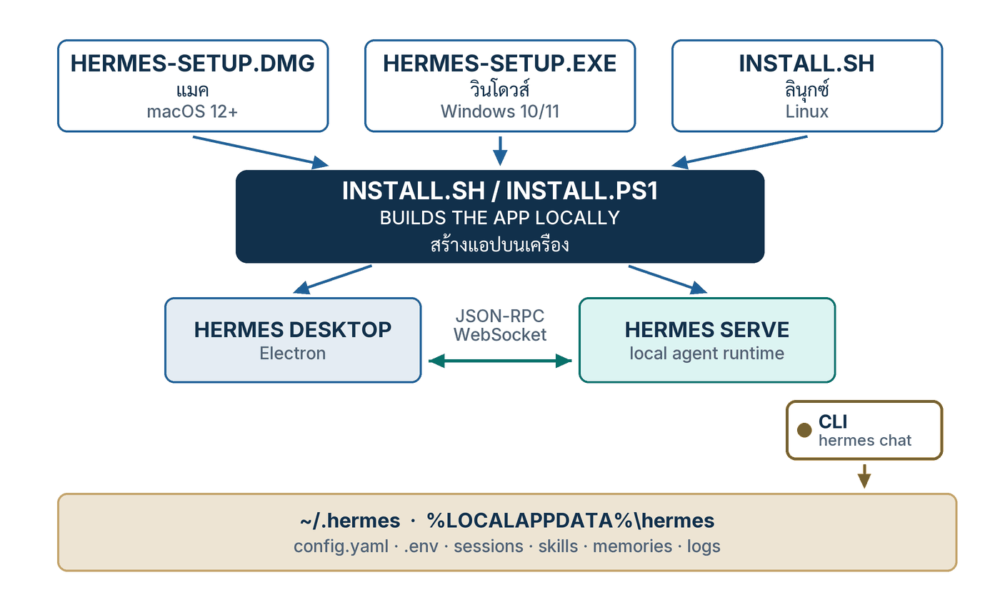
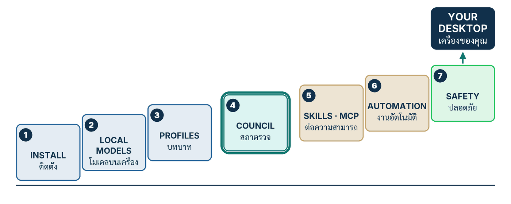

ในบทความนี้
- 1. What You Are Installing — แอปหนึ่งหน้าต่าง agent ตัวเดิม
- 2. Before You Start — เครื่อง เวลา และสิ่งที่ไม่ต้องมี
- 3. Install — ทีละหน้าจอบน macOS, Windows และ Linux
- 4. First Run — หน้าจอ onboarding และการเลือก provider
- 5. ข้อความแรก และสิ่งที่จะเห็นบนหน้าจอ
- 6. The Desktop Map — หน้าจอ คำสั่ง และไฟล์ที่ตรงกัน
- 7. Check That It Worked — สามอย่างที่ยืนยันว่าติดตั้งสำเร็จจริง
- 8. The Road Ahead — บันไดเจ็ดขั้นของซีรีส์นี้
- 9. สรุป
In this post
- 1. What You Are Installing — One Window, the Same Agent
- 2. Before You Start — the Machine, the Time, and What You Do Not Need
- 3. Install — Screen by Screen on macOS, Windows and Linux
- 4. First Run — Onboarding and Choosing a Provider
- 5. Your First Message, and What You See
- 6. The Desktop Map — Screen, Command, File
- 7. Check That It Worked — Three Things That Prove the Install
- 8. The Road Ahead — the Seven-Step Ladder of This Series
- 9. Summary
🤔 ถ้าไฟล์ติดตั้งมีขนาดแค่ 6.8 MB แต่หลังกดติดตั้งแล้วต้องรออีกหลายนาที — เครื่องเรากำลังทำอะไรอยู่ และจะรู้ได้อย่างไรว่ามันทำสำเร็จ?
ในซีรีส์ Hermes Agent in Practice ตอนที่ 10 — #10 Desktop & Fleet — ผมมองแอปเดสก์ท็อปจากมุมขององค์กร: กายวิภาคของ Electron ที่คุยกับ hermes serve, ตารางระดับการรองรับแพลตฟอร์ม, และคำถามว่าจะดูแลโน้ตบุ๊กยี่สิบเครื่องจากหน้าจอเดียวได้อย่างไร ซีรีส์ใหม่นี้เดินสวนทางกัน — กลับมาที่เครื่องเดียว คือเครื่องของคุณ แล้วลงมือทำจริงทีละหน้าจอ
คำตอบหนึ่งบรรทัดของตอนนี้คือ Hermes Desktop ไม่ใช่ผลิตภัณฑ์ใหม่ มันคือ agent ตัวเดิมในหน้าต่างแอป — เอกสารทางการเรียกมันว่า "a native app built around the same agent you get from the CLI and the gateway"[1] ไฟล์ที่เราดาวน์โหลดจึงไม่ใช่ตัวแอป แต่เป็นตัวช่วยติดตั้งขนาดเล็ก (bootstrap installer) ที่ไป build แอปตัวจริงบนเครื่องเรา และเมื่อมันทำงานเสร็จ ทุกอย่างจะไปลงที่โฟลเดอร์เดียวกับที่ CLI ใช้ คือ ~/.hermes ตอนนี้จะพาเดินตั้งแต่หน้าดาวน์โหลด ผ่าน onboarding ข้อความแรก ไปจนถึงสามคำสั่งที่ยืนยันว่ามันติดตั้งสำเร็จจริง
1. What You Are Installing — แอปหนึ่งหน้าต่าง agent ตัวเดิม
สิ่งที่กำลังจะติดตั้งคือแอป Electron + React ที่อยู่ในโฟลเดอร์ apps/desktop/ ของ repo NousResearch/hermes-agent ไม่ใช่ repo แยกและไม่ใช่ผลิตภัณฑ์แยก[1] มันเป็นซอฟต์แวร์เสรีภายใต้สัญญาอนุญาต MIT และดาวน์โหลดใช้ได้ฟรี — คำถามที่พบบ่อยบนหน้าผลิตภัณฑ์เขียนไว้ว่า "Hermes Desktop is the open-source Hermes Agent under an MIT license, free to download and use"[4] สถานะทั้งหมดเก็บที่ ~/.hermes บน macOS/Linux หรือ %LOCALAPPDATA%\hermes บน Windows[1]
{kind=link}

ประโยคที่ผมอยากให้จำจากเอกสารทางการมีอยู่ประโยคเดียว และมันตอบคำถามที่คนถามบ่อยที่สุดไปพร้อมกัน:
"The Hermes desktop app is a native app built around the same agent you get from the CLI and the gateway — same config, same API keys, same sessions, same skills, same memory. It is not a separate product or a lightweight clone."[1]
คำที่ทำงานหนักที่สุดในย่อหน้านั้นคือ same ที่ซ้ำห้าครั้ง เพราะมันแปลว่าถ้าคุณเคยตั้งค่า Hermes ไว้ใน terminal แล้ว การติดตั้งแอปนี้ไม่ได้เริ่มนับหนึ่งใหม่ — session ที่เปิดค้างไว้ใน CLI จะโผล่ในแอป และ session ที่เปิดในแอปก็กลับไปคุยต่อใน terminal ได้ นี่ไม่ใช่การซิงก์ข้อมูลข้ามสองโปรแกรม แต่เป็นการที่ทั้งสองอ่านเขียนไฟล์ชุดเดียวกันตั้งแต่แรก
สถาปัตยกรรมสามชั้นที่ควรรู้ก่อนกดติดตั้ง
ในทางเทคนิค แอปนี้คือเปลือก Electron ที่ห่อหน้าจอ React ไว้ และหน้าจอนั้นไม่ได้รัน agent เอง มันคุยกับกระบวนการเบื้องหลัง (backend) ที่ชื่อ hermes serve ซึ่งตัวแอปเป็นคนสั่งเปิดให้เอง ผ่าน JSON-RPC บน WebSocket เอกสารระบุชัดว่าแอปนี้ self-contained — มันรัน backend ของตัวเอง และไม่เคยเปิดหรือต้องพึ่ง web dashboard เลย[1]
รายละเอียดของกายวิภาคนี้ รวมถึงเส้นแบ่งที่คนสับสนบ่อยระหว่าง hermes serve กับ API server ที่ใช้ต่อ Hermes เข้ากับแอปอื่น ผมเขียนไว้แล้วใน #10 Desktop & Fleet ตอนนี้จะไม่ทวนซ้ำ แต่ขอเน้นข้อเดียวที่มีผลต่อการติดตั้ง: เพราะ backend เป็นกระบวนการแยกที่แอปเป็นคนเปิด ปัญหาตอนบูตจึงมักไม่ได้อยู่ที่หน้าจอ แต่อยู่ที่ backend เปิดไม่ขึ้น — และนั่นคือเหตุผลที่หัวข้อที่ 7 ให้เราไปอ่าน log ของเดสก์ท็อปเป็นอันดับแรก
💡 เรื่องเลขเวอร์ชันที่ต้องระวัง: Hermes Desktop ไม่มีเลขเวอร์ชันของตัวเอง มันออกรุ่นไปพร้อมกับ agent ท้ายหน้าผลิตภัณฑ์ทางการจึงเขียนว่า "Hermes Agent v0.21.0"[4] และรุ่นล่าสุดบน GitHub คือ "Hermes Agent v0.21.0 (v2026.8.31)" เผยแพร่ 31 สิงหาคม 2026 โดยมีไฟล์แนบ ศูนย์ไฟล์[5] — แปลว่าตัวติดตั้งเดสก์ท็อปไม่ได้อยู่บนหน้า GitHub Releases เวลาเขียนหรืออ้างถึงรุ่น ให้เขียนว่า "Hermes Agent v0.21.0 (tag v2026.8.31)" ไม่ใช่ "Hermes Desktop v0.21.0" และถ้าเจอเว็บไหนโฆษณา "Hermes Desktop เวอร์ชันเท่านั้นเท่านี้" ให้ตั้งข้อสงสัยไว้ก่อน
2. Before You Start — เครื่อง เวลา และสิ่งที่ไม่ต้องมี
สิ่งที่ต้องมีมีสามอย่าง: เครื่องที่อยู่ในรายการรองรับ — macOS 12 ขึ้นไป บนชิป Apple Silicon, Windows 10/11 หรือ Linux distro ใดก็ได้[4]; โปรแกรม git บนเครื่อง; และอินเทอร์เน็ตที่ต่อเนื่องนานพอให้ build เสร็จ สิ่งที่ไม่ต้องมีคือบัญชี Nous Portal — คำถามที่พบบ่อยบนหน้าผลิตภัณฑ์ตอบตรง ๆ ว่า "No account is needed to run the base app."[4]
เรื่องความต้องการเบื้องต้นนั้นน้อยกว่าที่คิด เอกสารติดตั้งเขียนว่าบนแพลตฟอร์มที่ไม่ใช่ Windows สิ่งเดียวที่ต้องมีอยู่ก่อนคือ Git ส่วน Python 3.11, Node.js v26, ripgrep และ ffmpeg ตัวติดตั้งจัดการให้เองทั้งหมด บน Linux ต้องเพิ่ม curl กับ xz-utils (ตัวติดตั้งดาวน์โหลด Node มาเป็นไฟล์ .tar.xz) และถ้าจะใช้แอปเดสก์ท็อปต้องมี g++ ด้วย — บน Debian/Ubuntu คือแพ็กเกจ build-essential เพราะต้องคอมไพล์ native module[2]
Hermes-Setup.dmg และ Hermes-Setup.exe ที่ดาวน์โหลดมามีขนาดราว 6.8 MB และ 7.9 MB เท่านั้น[11] เพราะมันไม่ใช่ตัวแอป มันคือตัวช่วยติดตั้งขนาดเล็กที่หน้าที่เดียวคือไปเรียก install.sh / install.ps1 แล้วรายงานความคืบหน้าเป็นขั้น ๆ ให้เราดู สคริปต์ติดตั้งประกาศรายชื่อขั้นตอนไว้ในโค้ดตรง ๆ เรียงจาก "System prerequisites", "Download Hermes Agent", "Create Python virtual environment", "Install Python dependencies", "Install browser-tool dependencies", "Install hermes command", "Prepare config and skills", "Configure API keys and settings", "Configure gateway service" แล้วจึง "Build desktop app" ก่อนปิดท้ายด้วย "Finish install"[10] ขั้นรองสุดท้ายนั้นคือขั้นที่ build แอป Electron บนเครื่องคุณ และมันต้องดาวน์โหลด Electron runtime ราว 114 MB มาก่อน[1] ดังนั้นถ้าค้างอยู่ตรงนั้นหลายนาที นั่นคืออาการปกติ ไม่ใช่อาการเสีย
ประโยคในโค้ดของ install.sh อธิบายไว้ชัดว่าขั้นตอน "Build desktop app" จะถูกใส่เข้ามาเฉพาะเมื่อมีตัวเลือก --include-desktop เท่านั้น และ "the signed bootstrap installer (Hermes-Setup) passes it so a GUI install ends up with a launchable app"[10] นี่คือเหตุผลที่คนติดตั้งด้วยไฟล์ .dmg/.exe ต้องรอนานกว่าคนที่ติดตั้งด้วยคำสั่งเดียวบน terminal — คนหลังยังไม่ได้ build แอปในขั้นตอนนั้น
pypi (เช่น pip install hermes-agent หรือ uv tool install hermes-agent), ผ่าน brew และ macOS บนซีพียู Intel ล้วนอยู่ในหมวด Unsupported — เอกสารเขียนตรง ๆ ว่า "PRs to fix them will not be accepted"[3] ตารางระดับการรองรับทั้งสามชั้นและความหมายเชิงองค์กรของมัน ผมสรุปไว้แล้วใน #10 Desktop & Fleet ตอนนี้จึงขอไม่ทวน แต่ขอเน้นบรรทัดเดียว: ถ้าเครื่องคุณเป็น MacBook รุ่นชิป Intel ให้หยุดตรงนี้ แล้วไปใช้เครื่อง Apple Silicon, Windows หรือ Linux แทน
3. Install — ทีละหน้าจอบน macOS, Windows และ Linux
ทางติดตั้งทางการมีสามทาง และทั้งสามทางไปจบที่โฟลเดอร์เดียวกัน บน macOS กับ Windows ทางที่เอกสารเรียกว่า "recommended" คือดาวน์โหลดตัวติดตั้งกราฟิกมาดับเบิลคลิก บน Linux ไม่มีตัวติดตั้งกราฟิก — ติดตั้ง CLI ด้วยคำสั่งเดียวก่อน แล้วสั่ง hermes desktop เพื่อ build และเปิดแอป[2]
# macOS (Apple Silicon, macOS 12+) — ตัวติดตั้งกราฟิก
# ดาวน์โหลดจากปุ่ม "Download desktop app" ใต้หัวข้อ Mac OS
https://hermes-assets.nousresearch.com/Hermes-Setup.dmg
# Windows 10/11 — ตัวติดตั้งกราฟิก หรือคำสั่งเดียวใน PowerShell (ไม่ต้องสิทธิ์ผู้ดูแล)
https://hermes-assets.nousresearch.com/Hermes-Setup.exe
iex (irm https://hermes-agent.nousresearch.com/install.ps1)
# Linux / WSL2 / macOS — ไม่มีตัวติดตั้งกราฟิก ติดตั้ง CLI ก่อน แล้วค่อยสั่ง build แอป
curl -fsSL https://hermes-agent.nousresearch.com/install.sh | bash
source ~/.bashrc # หรือ source ~/.zshrc
hermes desktopmacOS — ห้าขั้นตอน
- เปิดหน้าผลิตภัณฑ์
hermes-agent.nousresearch.com/desktopแล้วกดปุ่ม Download desktop app ใต้หัวข้อ Mac OS (กล่องนั้นเขียนกำกับไว้ว่า macOS 12+) ลิงก์จะพาไปที่hermes-assets.nousresearch.com/Hermes-Setup.dmgโดยหน้าเว็บต่อท้ายพารามิเตอร์?build=<commit>ให้อัตโนมัติ[4] — ที่ควรเห็น: ไฟล์ขนาดราว 6.8 MB ไม่ใช่ไฟล์หลักร้อย MB - เปิดไฟล์
.dmgแล้วเปิดตัวติดตั้งข้างใน macOS จะถามยืนยันการเปิดไฟล์ที่ดาวน์โหลดจากอินเทอร์เน็ตตามปกติ แต่จะไม่ขึ้นคำเตือน "unidentified developer" — ผมตรวจไฟล์นี้ด้วยspctlเมื่อ 7 กันยายน 2026 แล้วได้ผลว่า accepted จากแหล่ง Notarized Developer ID คือมันถูกเซ็นด้วยใบรับรอง Developer ID และผ่าน notarization ของ Apple พร้อม ticket ที่ stapled มากับไฟล์[11] - กดปุ่มเริ่มติดตั้งในหน้าต่างของตัวติดตั้ง จากนั้นมันจะไล่ทำงานตามลำดับขั้นที่ยกไว้ในหัวข้อที่ 2 — ที่ควรเห็น: รายการขั้นตอนที่ไล่ทีละบรรทัด ตั้งแต่ System prerequisites จนถึง Build desktop app
- รอขั้น Build desktop app ให้จบ ขั้นนี้ยาวที่สุดเพราะต้องดึง Electron runtime ราว 114 MB มาก่อนแล้วจึงประกอบแอป ถ้าค้างและเห็นข้อความ
retrying attempt=…ซ้ำ ๆ แปลว่าเครือข่ายของคุณเข้าถึงgithub.com/electron/electron/releasesไม่ได้ ตัวติดตั้งจะพยายามแก้เองสองชั้น — ล้างไฟล์ zip ที่เสียแล้วลองใหม่ จากนั้นจึงลองผ่านnpmmirror.com[1] - เมื่อขั้น Finish install ผ่าน ให้เปิดแอปขึ้นมา ถ้าคุณจะใช้ voice mode ในภายหลัง macOS จะขอสิทธิ์ไมโครโฟนหนึ่งครั้ง[1] — ที่ควรเห็น: หน้าต่างแชทที่มีแถบด้านซ้ายและช่องพิมพ์ด้านล่าง
Windows 10/11 — สองทางที่ไปที่เดียวกัน
- ทางกราฟิก: ดาวน์โหลด
Hermes-Setup.exeจากปุ่ม Download desktop app ใต้หัวข้อ Windows[4] แล้วดับเบิลคลิก — ที่ควรเห็น: ไม่มีกล่อง UAC ขอสิทธิ์ผู้ดูแล เพราะเอกสาร Windows ระบุว่า "No admin rights required"[9] - ทาง PowerShell: ถ้าถนัดพิมพ์มากกว่าดับเบิลคลิก ใช้คำสั่งเดียวคือ
iex (irm https://hermes-agent.nousresearch.com/install.ps1)[2] ทั้งสองทางเรียกสคริปต์เดียวกัน — เอกสารเขียนว่าตัวติดตั้งกราฟิกนั้น "on first launch the GUI callsinstall.ps1under the hood"[9] - ปล่อยให้มันติดตั้ง Python ผ่าน
uv, Node.js 26, PortableGit และโคลน repo ทุกอย่างลงใต้%LOCALAPPDATA%\hermes\โดยไม่แตะ Program Files และไม่แตะ registry ส่วนเครื่อง[9] - เมื่อเสร็จ ให้เปิด terminal หน้าต่างใหม่ เอกสารเตือนไว้ตรงนี้ว่าตัวติดตั้งเพิ่ม
hermesเข้าไปใน User PATH ซึ่งหน้าต่างเดิมที่เปิดค้างอยู่จะยังไม่เห็น[9] — ที่ควรเห็น: พิมพ์hermes --versionในหน้าต่างใหม่แล้วได้เลขรุ่นออกมา - หลังรันครั้งแรก แอปกับ CLI ใช้ที่เดียวกัน เอกสารเขียนว่าทั้งคู่ "share the same
%LOCALAPPDATA%\hermes\hermes-agentinstall and%LOCALAPPDATA%\hermesdata directory — switch between the GUI and the CLI freely"[9]
Linux — terminal ก่อน หน้าต่างทีหลัง
- เตรียมแพ็กเกจที่จำเป็นก่อน บน Debian/Ubuntu คือ
curl,xz-utilsและbuild-essentialสำหรับคอมไพล์ native module ของแอปเดสก์ท็อป[2] - ติดตั้ง CLI ด้วย
curl -fsSL https://hermes-agent.nousresearch.com/install.sh | bashโค้ดจะไปอยู่ที่~/.hermes/hermes-agent/ตัวคำสั่งเป็น symlink ที่~/.local/bin/hermesและข้อมูลอยู่ที่~/.hermes/[2] - โหลด shell ใหม่ด้วย
source ~/.bashrc(หรือ~/.zshrc) — ที่ควรเห็น: คำสั่งhermesใช้งานได้ ถ้าขึ้นcommand not foundเอกสารบอกให้เช็ก PATH ก่อนอย่างอื่น[2] - สั่ง
hermes desktopคำสั่งนี้ (มีชื่อพ้องว่าhermes gui) ตามคำอธิบายทางการคือ "installs workspace Node dependencies, builds the current OS's unpacked Electron app, then launches that packaged artifact"[1] — ครั้งแรกจึงนานที่สุด ครั้งต่อ ๆ ไปจะเร็วขึ้นเพราะ build ใหม่เฉพาะเมื่อ content stamp เปลี่ยน - หลังรันครั้งแรก CLI จะเขียนรายการเมนูของระบบให้เอง ไฟล์ชื่อ
hermes.desktopวางไว้ที่~/.local/share/applications/ตามมาตรฐาน XDG ทำให้เปิดแอปจากเมนูของเดสก์ท็อปได้โดยไม่ต้องผ่าน terminal อีก[15] — ที่ควรเห็น: ไอคอน Hermes โผล่ในรายการแอปของระบบ
ธงเสริมที่ผมใช้บ่อยมีสองตัว: hermes desktop --cwd <path> กำหนดโฟลเดอร์โครงการเริ่มต้นของ session (ตั้งค่า HERMES_DESKTOP_CWD ให้) และ hermes desktop --skip-build ข้ามขั้น build แล้วเปิดแอปที่ประกอบไว้แล้วเลย ซึ่งช่วยได้มากเวลาต้องเปิดปิดหลายรอบ[1]
4. First Run — หน้าจอ onboarding และการเลือก provider
หน้าจอแรกหลังเปิดแอปคือ onboarding ที่เอกสารบอกว่าออกแบบมาให้ "gets you to your first message in seconds" หน้าที่ของมันมีอย่างเดียว คือทำให้ agent มีโมเดลไว้เรียก ทางที่ง่ายที่สุดคือเข้าสู่ระบบผ่าน OAuth ทางที่สองคือใส่ API key เอง และทางที่สามคือกด Choose provider later เพื่อข้ามไปก่อน[1]
เรื่องที่ต้องพูดให้ตรงไปตรงมา: เอกสารทางการไม่ได้ไล่รายชื่อหน้าจอของ wizard นี้ไว้ทีละหน้า สิ่งที่ระบุไว้จริงคือมีตัวเลือก "Choose provider later" ให้ข้าม และหน้า Settings → Providers เป็นที่ที่จัดการ provider ทั้งหมดในภายหลัง โดยหน้านั้นมีทั้งส่วน Accounts สำหรับการเข้าสู่ระบบ และส่วนเก็บ API key แยกต่อ provider[1] ดังนั้นถ้าลำดับหน้าจอที่คุณเจอไม่ตรงกับบทความไหนบนอินเทอร์เน็ตเป๊ะ ๆ อย่าเพิ่งคิดว่าติดตั้งผิด
สี่ทางเข้าสู่ระบบที่มีเอกสารรองรับ
Nous Portal คือทางที่เอกสารเรียกว่า "the recommended way" และคำสั่งเทียบเท่าฝั่ง CLI คือ hermes setup --portal ซึ่ง "logs you in, sets Nous as your provider, and turns on the Tool Gateway in one command"[2] อีกสามทางเป็น OAuth เหมือนกัน คือ Anthropic (บัญชี Claude Pro/Max), OpenAI Codex และ xAI — สำหรับ xAI เอกสารเดสก์ท็อประบุว่า "Grok is a first-class OAuth provider in the launcher; sign in through the browser flow like the other OAuth providers"[1]
ข้อมูลการเข้าสู่ระบบแบบ OAuth ทั้งหมดเก็บที่ ~/.hermes/auth.json ส่วน API key แบบพิมพ์เองเก็บที่ ~/.hermes/.env เป็นคนละไฟล์กัน[6] การแยกนี้ไม่ใช่รายละเอียดปลีกย่อย เพราะตอนที่ 3 ของซีรีส์นี้จะพาสร้าง profile หลายตัว แล้วเราจะเจอว่าไฟล์ทั้งสองมีชะตากรรมต่างกัน
ถ้าเลือก Choose provider later แอปจะเปิดเข้าหน้าแชทเลยโดยที่ยังไม่มีโมเดล ตัวเลือกโมเดลอยู่ที่ช่องพิมพ์ ถัดจากไอคอนไมโครโฟนไปทางซ้าย กดแล้วเลือกได้ทั้งโมเดล ระดับ reasoning effort และ fast mode จากเมนูเดียว ส่วนการตั้งค่าเริ่มต้นของ profile ต้องไปที่ Settings → Model ซึ่งเอกสารย้ำว่าเป็น "the only place that writes it"[1] — พูดอีกอย่างคือ การกดเลือกโมเดลที่ช่องพิมพ์เป็นการเลือกเฉพาะกิจ ไม่ได้เปลี่ยนค่าเริ่มต้นให้ cron หรือ subagent
💡 คำแนะนำถ้าคุณจะอ่านตอนที่ 2 ต่อ: ให้กด Choose provider later ไว้ก่อน แล้วอย่าเพิ่งผูกบัตรกับใคร เพราะ #2 Local Models จะพาไปตั้งโมเดลที่รันบนเครื่องของเราเอง ผ่านหน้า Settings → Providers ที่มีมุมมอง Local Models ซึ่งเอกสารบอกว่า "installs and manages an on-device llama.cpp runtime"[1] การเว้นช่องนี้ไว้ว่างจะทำให้ตอนที่ 2 เริ่มจากศูนย์ได้สะอาดกว่า
5. ข้อความแรก และสิ่งที่จะเห็นบนหน้าจอ
เมื่อมีโมเดลแล้ว ให้พิมพ์อะไรง่าย ๆ ที่ต้องใช้เครื่องมือจริง เช่นขอให้มันไล่ดูไฟล์ในโฟลเดอร์หนึ่งแล้วสรุปให้ฟัง สิ่งที่จะเห็นไม่ใช่แค่ข้อความไหลออกมา แต่เป็นกิจกรรมของเครื่องมือที่ไหลไปพร้อมกัน และถ้า agent เอื้อมไปแตะคำสั่งที่ระบบมองว่าเสี่ยง จะมีกล่องขออนุมัติโผล่ขึ้นมาให้เรากดตัดสิน
เอกสารไล่รายการสิ่งที่หน้าแชทให้ไว้ชัดเจน และสามอย่างแรกคือสิ่งที่จะเห็นในนาทีแรก[1]
- Streaming responses — คำตอบไหลออกมาพร้อมกิจกรรมของเครื่องมือแบบสด และสรุปการเรียกเครื่องมือเป็นก้อนมีโครงสร้างระหว่างที่ agent ทำงาน
- ประวัติการสนทนาชุดเดียวกับทุกหน้าจอ — session ที่เริ่มที่นี่กลับไปคุยต่อใน CLI/TUI ได้ และในทางกลับกันก็ได้เหมือนกัน
- Drag-and-drop — ลากไฟล์มาวางตรงไหนก็ได้ในพื้นที่แชท ไฟล์จะถูกแนบไปกับข้อความถัดไป (วางจากคลิปบอร์ดก็ได้)
- แถบพรีวิวด้านขวา — เปิดหน้าเว็บ ไฟล์ หรือผลลัพธ์ของเครื่องมือไว้ข้าง ๆ ขณะที่ยังคุยต่อได้
- แถบสถานะด้านล่าง — มีสวิตช์ YOLO ต่อ session, มิเตอร์บอกว่า context เต็มไปกี่เปอร์เซ็นต์ (กดแล้วเปิดตารางแยกว่าอะไรกิน token ไปเท่าไร), อัตราการใช้แคช และ token ต่อวินาที
ทำไมถึงมีกล่องขออนุมัติโผล่มา
เพราะค่าเริ่มต้นของระบบอนุมัติคือโหมด smart เอกสารความปลอดภัยระบุค่าเริ่มต้นของ approvals.mode ไว้ว่า smart และอธิบายพฤติกรรมของมันว่า ใช้ LLM ตัวช่วยประเมินความเสี่ยง — คำสั่งความเสี่ยงต่ำอนุมัติให้อัตโนมัติเฉพาะคำสั่งนั้น คำสั่งที่อันตรายจริงปฏิเสธอัตโนมัติ ส่วนกรณีที่ไม่แน่ใจจะยกขึ้นมาถามเรา[8]
ผมคิดว่าการออกแบบนี้ฉลาดกว่าที่เห็น เพราะกล่องที่โผล่มาถามคือกรณีที่ระบบตัดสินใจแทนเราไม่ได้ ไม่ใช่กรณีที่มันขี้ระแวง ถ้าคุณเจอกล่องนี้ในข้อความแรก แปลว่า agent กำลังจะทำอะไรที่ควรค่าแก่การอ่านก่อนกด อีกสองโหมดที่มีคือ manual ซึ่งถามทุกครั้ง และ off ซึ่งเอกสารบอกตรง ๆ ว่าเทียบเท่าการรันด้วย --yolo[8]
6. The Desktop Map — หน้าจอ คำสั่ง และไฟล์ที่ตรงกัน
ตารางนี้คือแผนที่ที่ผมอยากให้เก็บไว้ข้างจอ เพราะมันเป็นรูปธรรมของประโยค "same config, same sessions" ที่ยกไว้ในหัวข้อแรก ทุกแถวอ่านจากซ้ายไปขวาได้ว่า สิ่งนี้อยู่ตรงไหนบนหน้าจอ พิมพ์คำสั่งอะไรได้ผลเดียวกัน และมันไปตกอยู่ที่ไฟล์ไหนบนดิสก์
| What | Where in the Desktop | CLI twin | On disk |
|---|---|---|---|
| Sessions — บทสนทนา | แถบด้านซ้าย; แท็บใหม่ด้วย Cmd/Ctrl+T | hermes sessions list · browse |
~/.hermes/state.db (SQLite + FTS5) และ ~/.hermes/sessions/ |
| Model — โมเดล | ตัวเลือกที่ช่องพิมพ์ ถัดจากไมโครโฟน; ค่าเริ่มต้นที่ Settings → Model | hermes model |
บล็อก model: ใน ~/.hermes/config.yaml |
| Keys & sign-ins — กุญแจ | Settings → Providers (Accounts / API keys) | hermes setup · hermes config set |
~/.hermes/.env (ความลับ) และ ~/.hermes/auth.json (OAuth) |
| Skills — ทักษะ | หน้า Skills มีสวิตช์เปิดปิดรายตัว และปุ่ม Install จากแคตตาล็อก | hermes skills |
~/.hermes/skills/ |
| Memory — ความจำ | Memory Graph (Star Map) หรือพิมพ์ /journey ในแชท |
hermes journey (พ้อง learning, memory-graph) |
~/.hermes/memories/ — ไฟล์ MEMORY.md และ USER.md |
| Cron — งานตามเวลา | หน้า Cron; และ Routines ในโหมด Bot | hermes cron |
~/.hermes/cron/ |
| Profiles — บทบาท | หน้า Profiles; ป้าย "Applies to" บนหน้า Settings | hermes profile list · use |
home directory แยกหนึ่งชุดต่อหนึ่ง profile |
| Plugins — ส่วนขยาย | Settings → Plugins | hermes plugins |
$HERMES_HOME/desktop-plugins/<id>/plugin.js |
| Gateways — backend ที่ต่ออยู่ | Settings → Gateways → Connection mode | hermes serve --host … --port 9119 |
~/.hermes/.env บนเครื่องที่รัน backend (คีย์ HERMES_DASHBOARD_BASIC_AUTH_*) |
| Logs — บันทึก | ปุ่ม Open logs บนการ์ดแจ้งข้อผิดพลาด | hermes logs desktop |
~/.hermes/logs/desktop.log |
สองแถวสุดท้ายเป็นแถวที่คนมองข้ามบ่อยที่สุด แถว Gateways สำคัญเพราะมันคือจุดที่ตัดสินว่า คำสั่งของ agent ไปรันที่เครื่องไหน — ค่าเริ่มต้นคือ backend ที่แอปเปิดเองบนเครื่องนี้ แต่เปลี่ยนไปชี้เครื่องอื่นได้ และเมื่อชี้ไปเครื่องอื่นแล้ว ทุกอย่างในตารางนี้ก็ย้ายตามไปด้วย ส่วนแถว Logs สำคัญเพราะมันคือคำสั่งแรกที่ควรพิมพ์เวลาอะไรไม่เข้าท่า ซึ่งเป็นเรื่องของหัวข้อถัดไปพอดี
อีกสามหน้าที่ยังไม่ได้ใส่ในตารางเพราะยังไม่ถึงเวลาใช้ คือ MCP สำหรับต่อเครื่องมือภายนอก, Agents และ Command Center สำหรับงานหลาย agent พร้อมกัน[1] ทั้งสามจะมีตอนของตัวเองใน #5 และ #6
7. Check That It Worked — สามอย่างที่ยืนยันว่าติดตั้งสำเร็จจริง
หน้าจอที่เปิดขึ้นมาได้ไม่ใช่หลักฐานว่าติดตั้งครบ ผมมีสามอย่างที่ทำทุกครั้งหลังติดตั้งเครื่องใหม่ ทั้งสามพิมพ์ใน terminal ธรรมดา ใช้เวลารวมไม่ถึงหนึ่งนาที และตอบคนละคำถามกัน — เวอร์ชันถูกไหม บูตผ่านไหม และไฟล์ไปลงที่ที่ควรลงหรือเปล่า
hermes --version # เลขรุ่นของ agent ที่แอปกำลังใช้อยู่
hermes doctor # ตรวจ config และ dependency (เติม --fix ให้ลองซ่อมเท่าที่ซ่อมได้)
hermes logs desktop -n 50 # ห้าสิบบรรทัดล่าสุดของการบูตแอปเดสก์ท็อป
ls ~/.hermes # โฟลเดอร์บ้านของ agent — ควรมีครบตามรายการด้านล่าง- เวอร์ชันและสุขภาพ —
hermes --versionพิมพ์ข้อมูลรุ่นออกมา[7] ส่วนhermes doctorคือคำสั่งที่เอกสารติดตั้งบอกให้ใช้เมื่อสงสัยว่าอะไรขาด — "it will tell you exactly what's missing and how to fix it" และเติม--fixเพื่อให้มันพยายามซ่อมเองได้[2] ผมต้องบอกตามตรงว่าเอกสารไม่ได้ยกตัวอย่างผลลัพธ์ของhermes doctorไว้ ถ้าอยากได้ผลที่ก๊อปไปแปะถามคนอื่นได้เลย ให้ใช้hermes dumpแทน ซึ่งเอกสารยกตัวอย่างไว้ครบว่ามันพิมพ์อะไรบ้าง ตั้งแต่บรรทัดversion:,hermes_home:,model:,provider:ไปจนถึงจำนวน skill ที่ติดตั้งไว้[7] - บันทึกการบูต —
hermes logs desktopอ่านไฟล์desktop.logซึ่งเอกสารอ้างอิงคำสั่งอธิบายไว้ว่าเก็บ "Electron desktop app — boot, backend spawn output, and recent Python tracebacks"[7] คำว่า backend spawn ตรงนี้คือหัวใจ เพราะมันบันทึกตอนที่แอปสั่งเปิดhermes serveให้ตัวเอง เอกสารเดสก์ท็อปบอกให้ดูไฟล์นี้เป็นอันดับแรกเมื่อแอปรายงานว่าบูตล้มเหลว และตามด้วยไฟล์นี้แบบสดได้ด้วยhermes logs gui -f[1] - โฟลเดอร์บ้าน —
ls ~/.hermesควรเห็นconfig.yaml(การตั้งค่า),.env(กุญแจและความลับ),auth.json(การเข้าสู่ระบบแบบ OAuth),SOUL.md(ตัวตนหลักของ agent), และโฟลเดอร์memories/,skills/,cron/,sessions/,logs/[6] บน Windows ให้ดูที่%LOCALAPPDATA%\hermesแทน[1] — ที่ควรเห็น: ครบทุกชื่อในรายการนี้ ถ้าขาดconfig.yamlแปลว่าขั้น "Prepare config and skills" ยังไม่ผ่าน
ถ้าข้อสองบอกว่าบูตไม่ผ่านจริง ๆ เอกสารมีคำสั่งรีเซ็ตสองบรรทัดที่แก้ปัญหาส่วนใหญ่ได้: ลบไฟล์เครื่องหมาย ~/.hermes/hermes-agent/.hermes-bootstrap-complete เพื่อบังคับให้ขั้นตอนติดตั้งครั้งแรกรันใหม่ทั้งชุด และลบโฟลเดอร์ ~/.hermes/hermes-agent/venv เพื่อสร้าง virtual environment ของ Python ใหม่[1] สังเกตว่าทั้งสองคำสั่งไม่แตะข้อมูลของเราเลย เพราะข้อมูลอยู่คนละชั้นกับโค้ด
💡 บททดสอบที่ผมชอบที่สุด: เปิด terminal แล้วพิมพ์hermes chatขณะที่แอปยังเปิดค้างอยู่ ถ้าติดตั้งถูกต้อง คุณจะเห็น session เดียวกับที่เพิ่งคุยในแอป เพราะทั้งสองอ่าน~/.hermesเดียวกัน — เอกสารเรียกความสัมพันธ์นี้ว่า "the same layout a CLI install uses, which is why the two are interchangeable"[1] นี่คือหลักฐานที่ดีที่สุดว่าคุณติดตั้ง Hermes ได้จริง ไม่ใช่แค่ติดตั้งหน้าต่างได้
8. The Road Ahead — บันไดเจ็ดขั้นของซีรีส์นี้
ถึงตรงนี้เรามีแอปที่เปิดได้ มีโมเดลให้เรียก และมีวิธีพิสูจน์ว่าทุกอย่างลงที่เดียวกันแล้ว หกตอนที่เหลือเป็นการต่อยอดจากฐานนี้ทีละขั้น จากการเลือกว่าจะให้ใครคิดแทนเรา ไปจนถึงการทำให้ agent ตรวจงานตัวเอง ทำงานเอง และกู้คืนตัวเองได้
{kind=link}

- #2 Local Models — สามทางสู่โมเดลที่รันบนเครื่องของเราเอง และกฎเรื่องขนาด context ที่ข้ามไม่ได้
- #3 Profiles — หนึ่ง agent ต่อหนึ่งบทบาท แต่ละตัวมีความจำ ทักษะ และโฟลเดอร์งานของตัวเอง
- #4 The Council — ให้หลายโมเดลตอบแยกกันแล้วสังเคราะห์ พร้อมผู้ตรวจอิสระก่อนคำตอบถึงมือเรา
- #5 Skills, MCP & Memory — สามลิ้นชักที่ทำให้ agent รู้มากขึ้น และวิธีดูว่าแต่ละลิ้นชักกิน context เท่าไร
- #6 Automation & Agents — งานที่รันตามเวลาเอง แตกงานให้ subagent และไม่ยอมบอกว่า "เสร็จ" โดยไม่มีหลักฐาน
- #7 Safety, Remote & Recovery — ตั้งขอบเขตให้ถูก ต่อไปยังเครื่องอื่น และกู้คืนเมื่อพัง รวมถึงเรื่องสวิตช์ YOLO ที่เราเว้นไว้
ลำดับนี้ไม่ได้เรียงตามความยาก แต่เรียงตามความไว้ใจ ทุกขั้นเพิ่มสิ่งที่ agent ทำได้โดยเราไม่ต้องนั่งดู และทุกขั้นจึงต้องมาพร้อมวิธีตรวจสอบที่เพิ่มขึ้นตามกัน นั่นคือเหตุผลที่ตอนเรื่องความปลอดภัยไปอยู่ท้ายสุด ไม่ใช่เพราะมันสำคัญน้อยที่สุด แต่เพราะมันคือขั้นที่เราจะมีของจริงให้ปกป้องแล้ว
9. สรุป
ถ้าตอนนี้เหลือรูปเดียว รูปนั้นคือรูปที่ 1 — สามทางติดตั้งที่ต่างกันบนสามระบบปฏิบัติการ ไหลลงมารวมกันที่ขั้น build บนเครื่องของเรา แล้วออกมาเป็นหน้าต่างที่คุยกับ hermes serve โดยทั้งคู่ยืนอยู่บนโฟลเดอร์ ~/.hermes ชุดเดียวกับที่ CLI ใช้ ทุกสิ่งที่ตอนต่อ ๆ ไปจะทำ ล้วนเป็นการเติมของลงในโฟลเดอร์นั้น
สิ่งที่ผมอยากให้ทำก่อนอ่านตอนที่ 2 มีสามอย่าง และไม่ต้องใช้เงินสักบาท หนึ่ง — รันสามคำสั่งในหัวข้อที่ 7 แล้วเก็บผลไว้ เพราะเวลาพังในอนาคต คุณจะอยากรู้ว่าตอนที่มันดีอยู่หน้าตาเป็นอย่างไร สอง — เปิด ~/.hermes/config.yaml อ่านหนึ่งรอบโดยยังไม่ต้องแก้ ให้คุ้นว่าอะไรอยู่ตรงไหน สาม — พิมพ์ hermes chat ใน terminal ขณะแอปเปิดค้าง แล้วดูว่าบทสนทนาเดียวกันโผล่ทั้งสองที่จริงหรือไม่
hermes-agent.org เคยถูกส่งขึ้น Hacker News จนมีคนตั้งคำถามตรง ๆ ว่า "Why is the domain not in nousresearch.com?" ก่อนที่อีกคนจะไปเปิดหน้าเงื่อนไขการใช้งานของเว็บนั้นมาอ้าง ซึ่งเขียนไว้เองว่า "We are not affiliated with Nous Research or any other organization referenced on this site"[12] ส่วน hermes-ai.net ก็บรรยายตัวเองบนหน้าแรกว่าเป็น "an unofficial, independent community guide to Hermes Agent"[13] และ github.com/fathah/hermes-desktop เป็นคนละโครงการชื่อ "Hermes One" ที่ README เขียนไว้ตรง ๆ ว่า "This repo is not affiliated to Nous Research. This is a community maintained project."[14] เว็บเหล่านี้ไม่ได้ผิดกฎหมายและบางแห่งก็ประกาศตัวชัดเจน แต่อย่าดาวน์โหลดตัวติดตั้งจากที่ไหนนอกจาก hermes-agent.nousresearch.com และ hermes-assets.nousresearch.com
🎯 สิ่งสำคัญที่ต้องจำ
- Hermes Desktop = agent ตัวเดิมในหน้าต่างแอป ไม่ใช่ผลิตภัณฑ์แยกและไม่ใช่ repo แยก — แอป Electron + React ใน
apps/desktop/ของ repo เดียวกัน MIT และฟรี - ไฟล์ติดตั้งเล็ก งานใหญ่ =
.dmg/.exeราว 7–8 MB คือตัวช่วยติดตั้งที่ไป build แอปบนเครื่องเรา ขั้น "Build desktop app" ที่ยาวนานคืออาการปกติ ไม่ใช่อาการค้าง - ไม่มีเวอร์ชันของตัวเอง = ออกรุ่นพร้อม agent ให้เขียนว่า "Hermes Agent v0.21.0 (tag v2026.8.31)" และจำไว้ว่า GitHub Releases ไม่มีไฟล์ติดตั้งเดสก์ท็อปแนบมาเลย
- ไม่ต้องมีบัญชี = ใช้แอปพื้นฐานได้โดยไม่ต้องสมัคร Nous Portal ทางเลือกคือ OAuth สี่เจ้า ใส่ API key เอง หรือกด Choose provider later ไว้ก่อน
- รายการที่ไม่รองรับ = pip/uv, brew, AUR และ macOS บนชิป Intel อยู่นอกขอบเขตการรองรับ ตรวจเครื่องให้ชัดก่อนเริ่ม
- โหมด smart คือค่าเริ่มต้น = กล่องขออนุมัติที่โผล่มาคือกรณีที่ระบบตัดสินแทนเราไม่ได้ ให้อ่านแล้วกด อย่าเพิ่งแตะสวิตช์ YOLO
- บททดสอบสุดท้าย =
hermes chatใน terminal ต้องเห็น session เดียวกับในแอป เพราะทั้งคู่ยืนบน~/.hermesเดียวกัน
อ้างอิง
ทุกแหล่งอ้างอิงตรวจสอบและเข้าถึงเมื่อ 7 กันยายน 2026 ซีรีส์นี้ใช้ป้ายกำกับหลักฐานสี่แบบ — Docs เอกสารทางการของ Hermes Agent · Release บันทึกการออกรุ่นหรือ commit/PR ที่ merge แล้ว · Issue issue หรือ PR ที่ยังเปิดอยู่ · Community แหล่งจากชุมชนที่ไม่ใช่ทางการ
- Docs Nous Research. Hermes Desktop (ต้นฉบับ Markdown บน branch main). raw.githubusercontent.com — เข้าถึง 2026-09-07. รองรับ: คำนิยาม "a native app built around the same agent…" · สถาปัตยกรรม Electron + React ที่คุยกับ
hermes serveและคำว่า self-contained ·HERMES_HOMEคือ~/.hermesหรือ%LOCALAPPDATA%\hermes· ตัวเลือก Choose provider later · หน้า Settings → Providers และมุมมอง Local Models · xAI Grok OAuth · ตัวเลือกโมเดลที่ช่องพิมพ์และ Settings → Model · รายการหน้าแชท streaming/drag-and-drop/แถบพรีวิว/แถบสถานะ · คำเตือนเรื่องสวิตช์ YOLO · Electron runtime ราว 114 MB และการแก้เมื่อค้างที่ Build desktop app · คำอธิบายและธงของhermes desktop·~/.local/share/applications/hermes.desktop·logs/desktop.log,hermes logs gui -fและคำสั่งรีเซ็ตสองบรรทัด · หน้า MCP, Agents และ Command Center - Docs Nous Research. Installation. raw.githubusercontent.com — เข้าถึง 2026-09-07. รองรับ: ทางติดตั้งทั้งสามและคำว่า recommended สำหรับตัวติดตั้งกราฟิก · คำสั่ง
curl … install.sh | bashและiex (irm … install.ps1)·hermes desktopหลังติดตั้งแบบ CLI · ข้อกำหนดเบื้องต้น Git, curl, xz-utils, g++/build-essential · ตารางที่ตั้งของโค้ด/คำสั่ง/ข้อมูล ·source ~/.bashrc·hermes setup --portal·hermes doctorและตารางปัญหาที่พบบ่อย - Docs Nous Research. Platform Support. raw.githubusercontent.com — เข้าถึง 2026-09-07. รองรับ: รายการ Unsupported ทั้งสี่ข้อ (AUR, macOS บน Intel, pypi, brew) และประโยค "PRs to fix them will not be accepted" · Tier 1 ครอบคลุม macOS Apple Silicon, Windows 10/11 และ Linux/WSL2
- Docs Nous Research. Hermes Desktop: Native AI Agent App for Mac, Windows & Linux (หน้าผลิตภัณฑ์). hermes-agent.nousresearch.com — เข้าถึง 2026-09-07. รองรับ: ป้ายกำกับ macOS 12+, Windows 10/11, Any distro · ปุ่ม "Download desktop app" และ "Install via terminal" · ลิงก์ดาวน์โหลด
Hermes-Setup.dmg/.exeพร้อมพารามิเตอร์?build=· คำถามที่พบบ่อย "No account is needed to run the base app" และ "Hermes Desktop is the open-source Hermes Agent under an MIT license, free to download and use" · ท้ายหน้าเขียนว่า "Hermes Agent v0.21.0" - Release Nous Research. Hermes Agent v0.21.0 (v2026.8.31) (ข้อมูลรุ่นล่าสุดผ่าน GitHub API). api.github.com — เข้าถึง 2026-09-07. รองรับ: รุ่นล่าสุด ณ วันที่เขียนคือชื่อ "Hermes Agent v0.21.0 (v2026.8.31)" tag
v2026.8.31เผยแพร่ 2026-08-31 และมีไฟล์แนบศูนย์ไฟล์ ซึ่งเป็นหลักฐานว่าตัวติดตั้งเดสก์ท็อปไม่ได้แจกผ่าน GitHub Releases - Docs Nous Research. Configuration. raw.githubusercontent.com — เข้าถึง 2026-09-07. รองรับ: ผังโฟลเดอร์
~/.hermes/ทั้งชุด —config.yaml,.env,auth.json(ระบุว่าเก็บ OAuth provider credentials),SOUL.md,memories/,skills/,cron/,sessions/,logs/· การแยกความลับไว้ใน.envและค่าอื่นไว้ในconfig.yaml - Docs Nous Research. CLI Commands. raw.githubusercontent.com — เข้าถึง 2026-09-07. รองรับ:
hermes --version·hermes doctor [--fix]และคำอธิบายสั้น "Diagnose config and dependency issues" · ตัวอย่างผลลัพธ์ของhermes dumpที่มีบรรทัด version/hermes_home/model/provider/skills · ตารางhermes logsที่ระบุว่าdesktopคือdesktop.logเก็บ "boot, backend spawn output, and recent Python tracebacks" ·hermes serveพอร์ตเริ่มต้น 9119 · คำสั่งในตารางแผนที่ ได้แก่hermes sessions,hermes model,hermes skills,hermes journey,hermes cron,hermes profile,hermes plugins - Docs Nous Research. Security. raw.githubusercontent.com — เข้าถึง 2026-09-07. รองรับ: ตารางคีย์ที่ระบุค่าเริ่มต้นของ
approvals.modeเป็นsmart· พฤติกรรมของโหมด smart (อนุมัติความเสี่ยงต่ำอัตโนมัติ ปฏิเสธคำสั่งอันตรายอัตโนมัติ ยกกรณีไม่แน่ใจมาถาม) · โหมด manual และ off พร้อมประโยคว่า off เทียบเท่า--yolo - Docs Nous Research. Windows (Native) Guide. raw.githubusercontent.com — เข้าถึง 2026-09-07. รองรับ: "No admin rights required" และการติดตั้งลง
%LOCALAPPDATA%\hermes\พร้อมเพิ่มลง User PATH โดยต้องเปิด terminal หน้าต่างใหม่ · ตัวติดตั้งกราฟิก "on first launch the GUI calls install.ps1 under the hood" เพื่อจัดหา Python ผ่าน uv, Node และ PortableGit · แอปกับ CLI ใช้%LOCALAPPDATA%\hermes\hermes-agentและ%LOCALAPPDATA%\hermesร่วมกัน - Release Nous Research. scripts/install.sh (ต้นฉบับบน branch main). raw.githubusercontent.com — เข้าถึง 2026-09-07. รองรับ: รายชื่อขั้นตอนติดตั้งทั้งสิบเอ็ดขั้นตามลำดับที่สคริปต์ประกาศไว้ในฟังก์ชัน
emit_manifestตั้งแต่ "System prerequisites" ถึง "Finish install" · ขั้น{"name":"desktop","title":"Build desktop app"}ถูกใส่เฉพาะเมื่อมี--include-desktop· หมายเหตุในโค้ดว่า "the signed bootstrap installer (Hermes-Setup) passes it so a GUI install ends up with a launchable app" · ข้อความช่วยเหลือของธง "--include-desktop Also build the desktop app" - Docs Nous Research. Hermes-Setup.dmg (ไฟล์ติดตั้งที่เว็บทางการเสิร์ฟจริง). hermes-assets.nousresearch.com — เข้าถึง 2026-09-07. รองรับ: ขนาดไฟล์จริง 6,752,854 ไบต์ (ราว 6.8 MB) และไฟล์คู่
Hermes-Setup.exeขนาด 7,946,048 ไบต์ (ราว 7.9 MB) วัดจากส่วนหัว HTTP เมื่อ 2026-09-07 · สถานะการเซ็นและ notarization ตรวจด้วยspctl -a -t openได้ผล "accepted / source=Notarized Developer ID" และcodesign -dvvvแสดง Authority เป็น Developer ID Application (team ID T2F6S8MF7C) พร้อมบรรทัด "Notarization Ticket=stapled" · ตัวระบุภายในไฟล์ระบุสถาปัตยกรรม arm64 - Community Hacker News. Hermes Agent – Open-source AI agent with persistent memory (กระทู้ที่ส่งลิงก์ hermes-agent.org). news.ycombinator.com — เผยแพร่ 2026-06-05, ความเห็นที่อ้างถึง 2026-06-09, เข้าถึง 2026-09-07. รองรับ: คำถามในกระทู้ว่า "Why is the domain not in nousresearch.com?" และความเห็นที่ยกข้อความจากหน้าเงื่อนไขการใช้งานของ hermes-agent.org ว่า "We are not affiliated with Nous Research or any other organization referenced on this site" · ข้อความประโยคหลังนี้ผมเปิดหน้า hermes-agent.org/terms-of-service/ ตรวจซ้ำเองเมื่อ 2026-09-07 และยังปรากฏอยู่ตรงตามนั้น
- Community hermes-ai.net. Hermes Agent Docs — Installation, Desktop & Multilingual Guide. hermes-ai.net — เข้าถึง 2026-09-07. รองรับ: เว็บนี้บรรยายตัวเองบนหน้าแรกว่า "hermes-ai.net is an unofficial, independent community guide to Hermes Agent" และ "is not affiliated with Nous Research" — ยกมาเป็นหลักฐานเกี่ยวกับตัวมันเอง ไม่ใช่แหล่งอ้างอิงข้อเท็จจริงเรื่อง Hermes
- Community fathah. Hermes One (fathah/hermes-desktop) README. raw.githubusercontent.com — เข้าถึง 2026-09-07. รองรับ: โครงการนี้ชื่อ "Hermes One" เป็น "a community maintained native desktop app" และ README ระบุเองว่า "This repo is not affiliated to Nous Research. This is a community maintained project." — ยกมาเป็นหลักฐานเกี่ยวกับตัวมันเอง
- Release Nous Research. hermes_cli/linux_desktop_entry.py (ต้นฉบับบน branch main). raw.githubusercontent.com — เข้าถึง 2026-09-07. รองรับ: บน Linux ตัว CLI เป็นผู้เขียนรายการเมนูของระบบให้เอง ไฟล์ชื่อ
hermes.desktop(ค่าคงที่DESKTOP_ENTRY_NAME) วางไว้ใต้applications/ของ XDG data home ซึ่งมีค่าปริยายเป็น~/.local/shareรวมเป็นเส้นทาง~/.local/share/applications/hermes.desktop· เอกสารประกอบในโค้ดระบุว่าExec=ต้องเป็นเส้นทางสัมบูรณ์ที่ไม่ผูกกับบริบทที่เรียก
🤔 If the installer file is only 6.8 MB, but you still wait several minutes after clicking Install — what is your machine actually doing, and how would you know it succeeded?
In the Hermes Agent in Practice series, post ten — #10 Desktop & Fleet — I looked at the desktop app from an organisation's vantage point: the anatomy of an Electron shell talking to hermes serve, the platform support tiers, and the question of how you look after twenty laptops from one screen. This new series walks the other way — back down to a single machine, yours, one screen at a time.
The one-line answer of this post is that Hermes Desktop is not a new product; it is the same agent in an app window — the official docs call it "a native app built around the same agent you get from the CLI and the gateway".[1] The file you download is therefore not the app: it is a small bootstrap installer whose only job is to build the real app on your machine, and when it finishes, everything lands in the same directory the CLI uses, ~/.hermes. This post walks from the download page, through onboarding and your first message, to the three commands that prove the install really worked.
1. What You Are Installing — One Window, the Same Agent
What you are about to install is the Electron + React app that lives in the apps/desktop/ directory of the NousResearch/hermes-agent repository — not a separate repo and not a separate product.[1] It is free software under the MIT license, free to download and use — the product page's FAQ puts it as "Hermes Desktop is the open-source Hermes Agent under an MIT license, free to download and use".[4] All of its state lives in ~/.hermes on macOS and Linux, or %LOCALAPPDATA%\hermes on Windows.[1]
There is exactly one sentence from the official docs I would ask you to remember, and it answers the most frequently asked question at the same time:
"The Hermes desktop app is a native app built around the same agent you get from the CLI and the gateway — same config, same API keys, same sessions, same skills, same memory. It is not a separate product or a lightweight clone."[1]
The hardest-working word in that paragraph is same, repeated five times, because it means that if you have already configured Hermes in a terminal, installing this app does not start you back at one — a session left open in the CLI shows up in the app, and a session started in the app can be picked up again in the terminal. This is not two programs synchronising data. It is two front ends reading and writing the same set of files from the outset.
The three-layer architecture worth knowing before you click Install
Technically the app is an Electron shell wrapping a React surface, and that surface does not run the agent itself. It talks to a headless backend called hermes serve, which the app launches for you, over JSON-RPC on a WebSocket. The docs are explicit that the app is self-contained — it runs its own backend and never opens or requires the web dashboard.[1]
The details of that anatomy, including the boundary people confuse most often between hermes serve and the API server you use to put Hermes behind other applications, I already wrote up in #10 Desktop & Fleet, so I will not repeat it here. I will stress only the one part that bears on installing: because the backend is a separate process the app starts, boot problems usually are not in the window — they are in a backend that failed to come up. That is exactly why section 7 sends you to the desktop log first.
💡 A version-number trap to avoid: Hermes Desktop has no version number of its own. It ships with the agent, which is why the official product page's footer reads "Hermes Agent v0.21.0"[4] and the latest GitHub release is "Hermes Agent v0.21.0 (v2026.8.31)", published 31 August 2026 with zero attached assets[5] — meaning the desktop installers are not served from the GitHub Releases page at all. When you write or cite a version, write "Hermes Agent v0.21.0 (tag v2026.8.31)", not "Hermes Desktop v0.21.0" — and treat any site advertising "Hermes Desktop version such-and-such" with suspicion.
2. Before You Start — the Machine, the Time, and What You Do Not Need
Three things are required: a machine on the supported list — macOS 12 or later on Apple Silicon, Windows 10/11, or any Linux distribution[4]; git on the machine; and a network connection that holds long enough for the build to finish. What you do not need is a Nous Portal account — the product page's FAQ answers it flatly: "No account is needed to run the base app."[4]
The prerequisites are lighter than most people expect. The installation docs say that on non-Windows platforms the only thing you need in advance is Git; Python 3.11, Node.js v26, ripgrep and ffmpeg are all handled by the installer. On Linux you also need curl and xz-utils (the installer downloads Node as a .tar.xz archive), and if you want the desktop app you additionally need g++ — on Debian/Ubuntu the build-essential package — because native modules have to be compiled.[2]
Hermes-Setup.dmg and Hermes-Setup.exe files you download are only about 6.8 MB and 7.9 MB.[11] That is because they are not the app. They are a small bootstrap installer whose single job is to call install.sh / install.ps1 and report progress stage by stage. The install script declares that stage list in code, in order: "System prerequisites", "Download Hermes Agent", "Create Python virtual environment", "Install Python dependencies", "Install browser-tool dependencies", "Install hermes command", "Prepare config and skills", "Configure API keys and settings", "Configure gateway service", then "Build desktop app", closing with "Finish install".[10] That second-to-last stage is the one that builds the Electron app on your machine, and it has to pull down an Electron runtime of roughly 114 MB first.[1] So if it sits there for several minutes, that is the normal symptom, not a broken one.
A comment inside install.sh spells out that the "Build desktop app" stage is added only when the --include-desktop option is present, and that "the signed bootstrap installer (Hermes-Setup) passes it so a GUI install ends up with a launchable app".[10] That is precisely why people installing from the .dmg/.exe wait longer than people installing with the one-line terminal command — the latter have not built the app at that point yet.
pypi (for example pip install hermes-agent or uv tool install hermes-agent), via brew, and macOS on x86 (Intel) processors are all Unsupported, and the page states outright that "PRs to fix them will not be accepted".[3] The full three-tier table and what it means for an organisation is something I already summarised in #10 Desktop & Fleet, so I will not repeat it — only the single line that matters here: if your machine is an Intel MacBook, stop now and use an Apple Silicon, Windows or Linux machine instead.
3. Install — Screen by Screen on macOS, Windows and Linux
There are three official install paths, and all three land in the same directory. On macOS and Windows the path the docs call "recommended" is to download the graphical installer and double-click it. On Linux there is no graphical installer — you install the CLI with a single command first, then run hermes desktop to build and launch the app.[2]
# macOS (Apple Silicon, macOS 12+) — the graphical installer
# Download it from the "Download desktop app" button under Mac OS
https://hermes-assets.nousresearch.com/Hermes-Setup.dmg
# Windows 10/11 — the graphical installer, or one PowerShell line (no admin rights)
https://hermes-assets.nousresearch.com/Hermes-Setup.exe
iex (irm https://hermes-agent.nousresearch.com/install.ps1)
# Linux / WSL2 / macOS — no graphical installer: install the CLI, then build the app
curl -fsSL https://hermes-agent.nousresearch.com/install.sh | bash
source ~/.bashrc # or: source ~/.zshrc
hermes desktopmacOS — five steps
- Open the product page at
hermes-agent.nousresearch.com/desktopand click Download desktop app under Mac OS (that card is labelled macOS 12+). The link goes tohermes-assets.nousresearch.com/Hermes-Setup.dmg, with the page appending a?build=<commit>parameter automatically.[4] — What you should see: a file of roughly 6.8 MB, not a several-hundred-megabyte download. - Open the
.dmgand launch the installer inside it. macOS asks the usual confirmation for a file downloaded from the internet, but it will not raise an "unidentified developer" warning — I checked this file withspctlon 7 September 2026 and it came back accepted, source Notarized Developer ID: it is signed with a Developer ID certificate and notarized by Apple, with the ticket stapled to the file.[11] - Click the install button in the installer window. It then works through the stage list quoted in section 2. — What you should see: stages ticking past one line at a time, from System prerequisites down to Build desktop app.
- Wait out the Build desktop app stage. This is the longest one, because it fetches the roughly 114 MB Electron runtime before assembling the app. If it hangs and you see
retrying attempt=…repeating, your network cannot reachgithub.com/electron/electron/releases; the installer tries to self-heal in two steps — clearing a corrupt cached zip and retrying, then retrying once more throughnpmmirror.com.[1] - Once Finish install passes, open the app. If you later use voice mode, macOS will prompt once for microphone access.[1] — What you should see: a chat window with a sidebar on the left and a composer at the bottom.
Windows 10/11 — two paths to the same place
- The graphical path: download
Hermes-Setup.exefrom the Download desktop app button under Windows[4] and double-click it. — What you should see: no UAC elevation dialog, because the Windows guide states "No admin rights required".[9] - The PowerShell path: if you would rather type than double-click, the one-liner is
iex (irm https://hermes-agent.nousresearch.com/install.ps1).[2] Both paths call the same script — the docs say of the graphical installer that "on first launch the GUI callsinstall.ps1under the hood".[9] - Let it install Python via
uv, Node.js 26, PortableGit and the repo clone, all underneath%LOCALAPPDATA%\hermes\— without touching Program Files and without touching the machine-wide registry.[9] - When it finishes, open a new terminal window. The docs warn about this exact point: the installer adds
hermesto your User PATH, which an already-open window will not see.[9] — What you should see: typinghermes --versionin the new window prints a version. - After that first run, the app and the CLI use one place. The docs say both "share the same
%LOCALAPPDATA%\hermes\hermes-agentinstall and%LOCALAPPDATA%\hermesdata directory — switch between the GUI and the CLI freely".[9]
Linux — terminal first, window second
- Install the packages you need up front. On Debian/Ubuntu that is
curl,xz-utilsandbuild-essentialfor compiling the desktop app's native modules.[2] - Install the CLI with
curl -fsSL https://hermes-agent.nousresearch.com/install.sh | bash. The code lands in~/.hermes/hermes-agent/, the command is a symlink at~/.local/bin/hermes, and the data lives in~/.hermes/.[2] - Reload the shell with
source ~/.bashrc(or~/.zshrc). — What you should see: thehermescommand resolves. If you getcommand not found, the docs tell you to check PATH before anything else.[2] - Run
hermes desktop. That command (aliashermes gui), in the official description, "installs workspace Node dependencies, builds the current OS's unpacked Electron app, then launches that packaged artifact".[1] The first run is therefore the slowest; later ones are faster, because it rebuilds only when the content stamp changes. - After the first run the CLI writes a system menu entry for you: a file named
hermes.desktopplaced in~/.local/share/applications/per the XDG convention, so you can launch the app from your desktop's app menu without a terminal.[15] — What you should see: a Hermes icon appearing in the system's application list.
Two extra flags I reach for often: hermes desktop --cwd <path> sets the initial project directory for desktop sessions (it sets HERMES_DESKTOP_CWD for you), and hermes desktop --skip-build skips the build step and launches the already-packaged app, which helps a great deal when you are opening and closing it repeatedly.[1]
4. First Run — Onboarding and Choosing a Provider
The first screen after launch is onboarding, which the docs say is designed so that it "gets you to your first message in seconds". It has one job: give the agent a model to call. The easiest route is signing in over OAuth; the second is entering an API key yourself; the third is clicking Choose provider later and skipping ahead.[1]
One thing to say plainly: the official docs do not enumerate this wizard's screens one by one. What they do state is that a "Choose provider later" option exists to skip it, and that Settings → Providers is where every provider is managed afterwards, with an Accounts section for signing in and per-provider API-key storage beside it.[1] So if the sequence of screens you meet does not match some article on the internet exactly, do not assume you installed it wrong.
Four documented ways to sign in
Nous Portal is the route the docs call "the recommended way", and its CLI equivalent is hermes setup --portal, which "logs you in, sets Nous as your provider, and turns on the Tool Gateway in one command".[2] The other three are OAuth as well: Anthropic (a Claude Pro/Max account), OpenAI Codex, and xAI — of which the desktop docs say "Grok is a first-class OAuth provider in the launcher; sign in through the browser flow like the other OAuth providers".[1]
Every OAuth credential is stored in ~/.hermes/auth.json, while API keys you type yourself go to ~/.hermes/.env — two different files.[6] That separation is not a footnote, because post #3 of this series will have you creating several profiles, and there we will find that the two files meet very different fates.
If you pick Choose provider later, the app drops you into the chat with no model configured yet. The model picker lives in the composer, just left of the microphone icon; click it and you can set the model, the reasoning effort and fast mode from one dropdown. Setting the profile's default, by contrast, happens in Settings → Model, which the docs stress is "the only place that writes it".[1] Put differently: picking a model in the composer is an ad-hoc choice, and it does not change the default that crons and subagents start from.
💡 My advice if you plan to read post #2: click Choose provider later and do not put a card down with anyone yet, because #2 Local Models will set you up with a model running on your own machine, through the Settings → Providers pane whose Local Models view, in the docs' words, "installs and manages an on-device llama.cpp runtime".[1] Leaving this slot empty lets post #2 start from a clean zero.
5. Your First Message, and What You See
Once there is a model, type something simple that genuinely needs a tool — ask it to look through a folder and summarise what is there, for instance. What you will see is not just text flowing out, but tool activity flowing alongside it; and if the agent reaches for a command the system considers risky, an approval prompt appears for you to decide.
The docs list what the chat surface gives you, and the first three are what you meet in the first minute.[1]
- Streaming responses — the answer streams with live tool activity and structured tool-call summaries as the agent works.
- The same conversation history as every other surface — sessions started here resume in the CLI/TUI, and the other way round.
- Drag-and-drop — drop files anywhere in the chat area to attach them to your next message (clipboard paste works too).
- A right-hand preview rail — render web pages, files and tool outputs side by side while you keep chatting.
- The status bar along the bottom — a per-session YOLO toggle, a context-usage meter showing how full the window is (click it for a token breakdown by category), cache hit rate, and tokens per second.
Why an approval prompt shows up at all
Because the approval system's default is smart mode. The security docs give approvals.mode a default of smart and describe its behaviour: an auxiliary LLM assesses risk — low-risk commands are auto-approved for that command only, genuinely dangerous ones are auto-denied, and the uncertain cases escalate to a manual prompt.[8]
I think that design is cleverer than it looks, because the box that interrupts you is the case the system could not decide for you — not the case where it is being jumpy. If you meet this prompt on your first message, it means the agent is about to do something worth reading before you click. The two other modes are manual, which prompts every time, and off, which the docs say plainly is equivalent to running with --yolo.[8]
6. The Desktop Map — Screen, Command, File
This table is the map I would keep beside the screen, because it is the concrete form of the "same config, same sessions" sentence from section 1. Every row reads left to right as: here is where this lives on screen, here is the command that gets you the same result, and here is the file it lands in on disk.
| What | Where in the Desktop | CLI twin | On disk |
|---|---|---|---|
| Sessions | Left sidebar; new tab with Cmd/Ctrl+T | hermes sessions list · browse |
~/.hermes/state.db (SQLite + FTS5) and ~/.hermes/sessions/ |
| Model | Picker in the composer, left of the microphone; default in Settings → Model | hermes model |
The model: block in ~/.hermes/config.yaml |
| Keys & sign-ins | Settings → Providers (Accounts / API keys) | hermes setup · hermes config set |
~/.hermes/.env (secrets) and ~/.hermes/auth.json (OAuth) |
| Skills | Skills pane with per-skill enable/disable toggles and one-click Install from the catalog | hermes skills |
~/.hermes/skills/ |
| Memory | Memory Graph (Star Map), or type /journey in chat |
hermes journey (aliases learning, memory-graph) |
~/.hermes/memories/ — the MEMORY.md and USER.md files |
| Cron | Cron pane; and Routines in Bot Mode | hermes cron |
~/.hermes/cron/ |
| Profiles | Profiles pane; the "Applies to" chip row on settings pages | hermes profile list · use |
A separate home directory per profile |
| Plugins | Settings → Plugins | hermes plugins |
$HERMES_HOME/desktop-plugins/<id>/plugin.js |
| Gateways — the backend you are attached to | Settings → Gateways → Connection mode | hermes serve --host … --port 9119 |
~/.hermes/.env on the machine running the backend (the HERMES_DASHBOARD_BASIC_AUTH_* keys) |
| Logs | The Open logs button on an error card | hermes logs desktop |
~/.hermes/logs/desktop.log |
The last two rows are the ones people overlook most. Gateways matters because it decides which machine actually runs the agent's commands — the default is the backend the app starts on this machine, but you can point it at another one, and when you do, everything else in this table moves with it. Logs matters because it is the first command to type when something misbehaves, which is exactly what the next section is about.
Three more panes are missing from the table only because it is not yet time to use them: MCP for attaching external tools, and Agents and Command Center for multi-agent work.[1] All three get a post of their own, in #5 and #6.
7. Check That It Worked — Three Things That Prove the Install
A window that opens is not evidence that the install is complete. There are three things I do every time I set up a new machine. All three run in an ordinary terminal, take under a minute together, and answer different questions — is the version right, did it boot, and did the files land where they should?
hermes --version # the agent version the app is running on
hermes doctor # check config and dependencies (add --fix to attempt repairs)
hermes logs desktop -n 50 # the last fifty lines of the desktop app's boot
ls ~/.hermes # the agent's home directory — expect everything listed below- Version and health —
hermes --versionprints version information,[7] andhermes doctoris the command the installation docs point you at when you suspect something is missing: "it will tell you exactly what's missing and how to fix it", with--fixto let it attempt repairs.[2] I have to say plainly that the docs do not show a sample of whathermes doctorprints. If you want output you can paste into a support thread, usehermes dumpinstead, which the docs do document in full — its example runs from theversion:,hermes_home:,model:andprovider:lines down to the count of installed skills.[7] - The boot log —
hermes logs desktopreadsdesktop.log, which the CLI reference describes as holding "Electron desktop app — boot, backend spawn output, and recent Python tracebacks".[7] The phrase backend spawn is the heart of it, because that is the record of the app launchinghermes servefor itself. The desktop docs tell you to read this file first when the app reports a boot failure, and you can also follow it live withhermes logs gui -f.[1] - The home directory —
ls ~/.hermesshould showconfig.yaml(settings),.env(keys and secrets),auth.json(OAuth credentials),SOUL.md(the agent's primary identity), and the directoriesmemories/,skills/,cron/,sessions/andlogs/.[6] On Windows look in%LOCALAPPDATA%\hermesinstead.[1] — What you should see: every name on that list. Ifconfig.yamlis missing, the "Prepare config and skills" stage did not complete.
If check two says the boot genuinely failed, the docs give two reset lines that clear most of it: delete the marker file ~/.hermes/hermes-agent/.hermes-bootstrap-complete to force the whole first-launch setup to run again, and delete ~/.hermes/hermes-agent/venv to rebuild the Python virtual environment.[1] Notice that neither command touches your data — the data sits on a different layer from the code.
💡 My favourite test of all: open a terminal and typehermes chatwhile the app is still running. If the install is correct, you will see the same session you were just talking to in the app, because both read the same~/.hermes— the docs describe the relationship as "the same layout a CLI install uses, which is why the two are interchangeable".[1] That is the best proof there is that you installed Hermes, and not merely a window.
8. The Road Ahead — the Seven-Step Ladder of This Series
At this point you have an app that opens, a model it can call, and a way to prove that everything landed in one place. The remaining six posts build on that base one step at a time — from choosing who does the thinking for you, all the way to an agent that checks its own work, runs itself, and can recover.
- #2 Local Models — three roads to a model running on your own machine, and the context-size rule you cannot skip.
- #3 Profiles — one agent per role, each with its own memory, skills and working folder.
- #4 The Council — several models answering separately before one synthesises, with an independent reviewer before the answer reaches you.
- #5 Skills, MCP & Memory — the three drawers that make the agent know more, and how to see what each costs you in context.
- #6 Automation & Agents — work that runs on schedule, fans out to subagents, and refuses to say "done" without evidence.
- #7 Safety, Remote & Recovery — setting the boundaries right, attaching to another machine, and recovering when it breaks, including the YOLO toggle we left alone.
That order is not sorted by difficulty. It is sorted by trust. Every step adds something the agent can do without you watching, and every step therefore has to arrive with a matching increase in how you check it. That is why the safety post sits at the end — not because it matters least, but because it is the step at which you finally have something real to protect.
9. Summary
If one picture survives from this post, it is Figure 1 — three different install paths on three operating systems, flowing down into a build step on your own machine, and coming out as a window that talks to hermes serve, with both standing on the same ~/.hermes directory the CLI uses. Everything the later posts do is adding things into that directory.
There are three things I would do before reading post #2, and none of them costs a thing. One — run the three commands from section 7 and keep the output, because when something breaks later you will want to know what it looked like when it was healthy. Two — open ~/.hermes/config.yaml and read it once without editing anything, just to learn where things are. Three — type hermes chat in a terminal while the app is open, and watch whether the same conversation really shows up in both places.
hermes-agent.org was submitted to Hacker News, where someone asked bluntly "Why is the domain not in nousresearch.com?" before another commenter pulled up that site's own terms-of-service page, which states "We are not affiliated with Nous Research or any other organization referenced on this site".[12] hermes-ai.net likewise describes itself on its front page as "an unofficial, independent community guide to Hermes Agent".[13] And github.com/fathah/hermes-desktop is a different project called "Hermes One", whose README says outright: "This repo is not affiliated to Nous Research. This is a community maintained project."[14] None of these sites is illegal and several label themselves clearly, but do not download an installer from anywhere except hermes-agent.nousresearch.com and hermes-assets.nousresearch.com.
🎯 Key Takeaways
- Hermes Desktop = the same agent in an app window, not a separate product and not a separate repo — an Electron + React app in
apps/desktop/of the same repository, MIT-licensed and free - Small file, big job = the 7–8 MB
.dmg/.exeis a bootstrap installer that builds the app on your machine; a long "Build desktop app" stage is the normal symptom, not a hang - No version of its own = it ships with the agent, so write "Hermes Agent v0.21.0 (tag v2026.8.31)" — and remember that GitHub Releases carries no desktop installer at all
- No account required = the base app runs without a Nous Portal sign-up; your options are four OAuth providers, your own API key, or Choose provider later
- The unsupported list = pip/uv, brew, AUR and macOS on Intel silicon are outside the support boundary; check the machine before you begin
- smart is the default = an approval prompt is the case the system could not decide for you, so read it and click; leave the YOLO toggle alone for now
- The final test =
hermes chatin a terminal must show the same session as the app, because both stand on the same~/.hermes
References
Every source was verified and accessed on 7 September 2026 (2026-09-07). This series uses four evidence labels — Docs official Hermes Agent documentation · Release release notes or a merged commit/PR · Issue an open issue or PR · Community a non-official community source.
- Docs Nous Research. Hermes Desktop (Markdown source on branch main). raw.githubusercontent.com — accessed 2026-09-07. Supports: the definition "a native app built around the same agent…" · the Electron + React architecture talking to
hermes serveand the word self-contained ·HERMES_HOMEbeing~/.hermesor%LOCALAPPDATA%\hermes· the Choose provider later option · the Settings → Providers pane and its Local Models view · xAI Grok OAuth · the composer model picker and Settings → Model · the chat-surface list of streaming, drag-and-drop, preview rail and status bar · the YOLO warning sentence · the roughly 114 MB Electron runtime and the fix when Build desktop app hangs · the description and flags ofhermes desktop·~/.local/share/applications/hermes.desktop·logs/desktop.log,hermes logs gui -fand the two reset commands · the MCP, Agents and Command Center panes - Docs Nous Research. Installation. raw.githubusercontent.com — accessed 2026-09-07. Supports: the three install paths and the word recommended for the graphical installer · the
curl … install.sh | bashandiex (irm … install.ps1)commands ·hermes desktopafter a CLI-only install · the prerequisites Git, curl, xz-utils and g++/build-essential · the install-layout table for code, binary and data ·source ~/.bashrc·hermes setup --portal·hermes doctorand the common-problems table - Docs Nous Research. Platform Support. raw.githubusercontent.com — accessed 2026-09-07. Supports: all four Unsupported entries (AUR, macOS on Intel, pypi, brew) and the sentence "PRs to fix them will not be accepted" · Tier 1 covering macOS Apple Silicon, Windows 10/11 and Linux/WSL2
- Docs Nous Research. Hermes Desktop: Native AI Agent App for Mac, Windows & Linux (product page). hermes-agent.nousresearch.com — accessed 2026-09-07. Supports: the macOS 12+, Windows 10/11 and Any distro labels · the "Download desktop app" and "Install via terminal" buttons · the
Hermes-Setup.dmg/.exedownload links with their?build=parameter · the FAQ lines "No account is needed to run the base app" and "Hermes Desktop is the open-source Hermes Agent under an MIT license, free to download and use" · the page footer reading "Hermes Agent v0.21.0" - Release Nous Research. Hermes Agent v0.21.0 (v2026.8.31) (latest-release data via the GitHub API). api.github.com — accessed 2026-09-07. Supports: the latest release at the time of writing being named "Hermes Agent v0.21.0 (v2026.8.31)", tag
v2026.8.31, published 2026-08-31, and carrying zero attached assets — the evidence that desktop installers are not distributed through GitHub Releases - Docs Nous Research. Configuration. raw.githubusercontent.com — accessed 2026-09-07. Supports: the full
~/.hermes/directory tree —config.yaml,.env,auth.json(documented as holding OAuth provider credentials),SOUL.md,memories/,skills/,cron/,sessions/,logs/· the split that puts secrets in.envand everything else inconfig.yaml - Docs Nous Research. CLI Commands. raw.githubusercontent.com — accessed 2026-09-07. Supports:
hermes --version·hermes doctor [--fix]and its one-line description "Diagnose config and dependency issues" · the worked example output ofhermes dumpwith its version/hermes_home/model/provider/skills lines · thehermes logstable namingdesktopasdesktop.logholding "boot, backend spawn output, and recent Python tracebacks" ·hermes servewith default port 9119 · the commands in the map table:hermes sessions,hermes model,hermes skills,hermes journey,hermes cron,hermes profile,hermes plugins - Docs Nous Research. Security. raw.githubusercontent.com — accessed 2026-09-07. Supports: the key table giving
approvals.modea default ofsmart· the behaviour of smart mode (low-risk auto-approved, genuinely dangerous auto-denied, uncertain cases escalated) · the manual and off modes, with the sentence that off is equivalent to--yolo - Docs Nous Research. Windows (Native) Guide. raw.githubusercontent.com — accessed 2026-09-07. Supports: "No admin rights required" and the install into
%LOCALAPPDATA%\hermes\withhermesadded to the User PATH, requiring a new terminal window · the graphical installer where "on first launch the GUI calls install.ps1 under the hood" to provision Python via uv, Node and PortableGit · the app and CLI sharing%LOCALAPPDATA%\hermes\hermes-agentand%LOCALAPPDATA%\hermes - Release Nous Research. scripts/install.sh (source on branch main). raw.githubusercontent.com — accessed 2026-09-07. Supports: all eleven install stages in the order the script declares them in its
emit_manifestfunction, from "System prerequisites" to "Finish install" · the stage{"name":"desktop","title":"Build desktop app"}being added only with--include-desktop· the in-code comment that "the signed bootstrap installer (Hermes-Setup) passes it so a GUI install ends up with a launchable app" · the flag's help text "--include-desktop Also build the desktop app" - Docs Nous Research. Hermes-Setup.dmg (the installer the official site actually serves). hermes-assets.nousresearch.com — accessed 2026-09-07. Supports: the real file size of 6,752,854 bytes (about 6.8 MB), and its sibling
Hermes-Setup.exeat 7,946,048 bytes (about 7.9 MB), both measured from the HTTP headers on 2026-09-07 · the signing and notarization status, checked withspctl -a -t openreturning "accepted / source=Notarized Developer ID" and withcodesign -dvvvshowing a Developer ID Application authority (team ID T2F6S8MF7C) and the line "Notarization Ticket=stapled" · the embedded identifier naming the arm64 architecture - Community Hacker News. Hermes Agent – Open-source AI agent with persistent memory (the thread on the hermes-agent.org submission). news.ycombinator.com — submitted 2026-06-05, cited comments 2026-06-09, accessed 2026-09-07. Supports: the question asked in the thread, "Why is the domain not in nousresearch.com?", and the comment quoting hermes-agent.org's own terms-of-service page, "We are not affiliated with Nous Research or any other organization referenced on this site" · I re-checked that second sentence myself by opening hermes-agent.org/terms-of-service/ on 2026-09-07, where it still appears exactly as quoted
- Community hermes-ai.net. Hermes Agent Docs — Installation, Desktop & Multilingual Guide. hermes-ai.net — accessed 2026-09-07. Supports: the site describing itself on its front page as "hermes-ai.net is an unofficial, independent community guide to Hermes Agent" and stating that it "is not affiliated with Nous Research" — cited as evidence about itself, not as a source for any fact about Hermes
- Community fathah. Hermes One (fathah/hermes-desktop) README. raw.githubusercontent.com — accessed 2026-09-07. Supports: the project being named "Hermes One", described as "a community maintained native desktop app", with a README that states "This repo is not affiliated to Nous Research. This is a community maintained project." — cited as evidence about itself
- Release Nous Research. hermes_cli/linux_desktop_entry.py (source on branch main). raw.githubusercontent.com — accessed 2026-09-07. Supports: on Linux the CLI writes the system menu entry itself — a file named
hermes.desktop(theDESKTOP_ENTRY_NAMEconstant) placed under theapplications/directory of the XDG data home, which defaults to~/.local/share, giving the path~/.local/share/applications/hermes.desktop· the module docstring stating thatExec=must be an absolute launcher independent of launch context